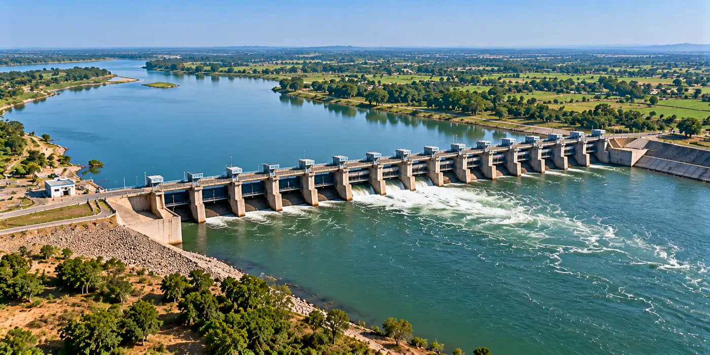

The Assignment
WAPCOS, for Vidarbha Irrigation Development Corporation (VIDC), required Detailed Project Reports (DPRs) for the development of three barrages on the Wardha River in Chandrapur district, Maharashtra.
The assignment required engineering studies, hydraulic design and water-resource planning to develop technically and economically feasible barrage infrastructure for the utilisation of river water for irrigation, domestic and industrial requirements.
Our Approach
CS TECH Ai provided engineering consultancy and DPR preparation for the proposed barrages at Amdi, Dhanora and Arvi Dhanur.
The engagement included:
- Engineering surveys and investigations
- Water-resource assessment and planning
- Hydraulic analysis and design
- Barrage planning and engineering design
- Assessment of irrigation and water-utilisation requirements
- Techno-economic analysis
- Cost estimation
- Preparation of Detailed Project Reports (DPRs)
The proposed engineering solution incorporated vertical lifting gates at the Amdi and Dhanora barrages, while a rubber dam was proposed at Arvi Dhanur, allowing the barrage design to respond to the requirements of the individual sites.
Together, the three barrages were planned for approximately 235 Mm³ of water utilisation, including 82 Mm³ for irrigation, 70 Mm³ for domestic use and 58 Mm³ for industrial requirements.